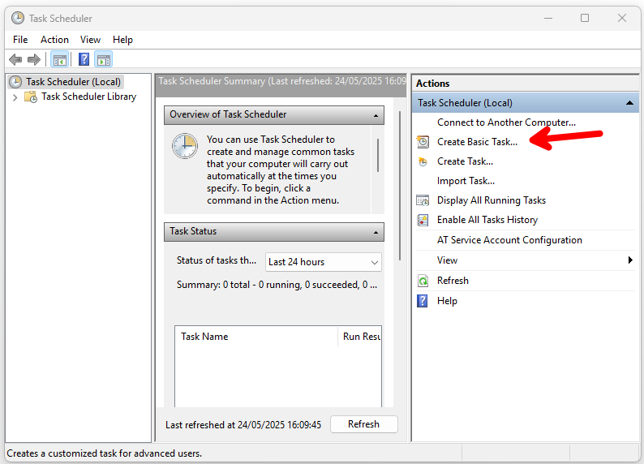
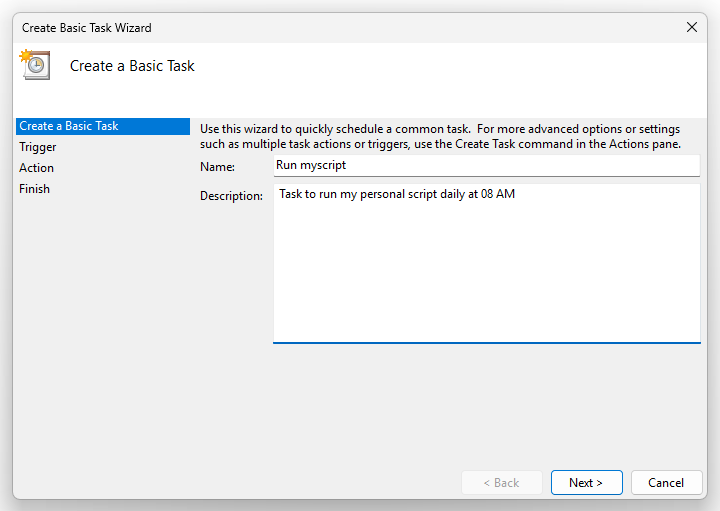
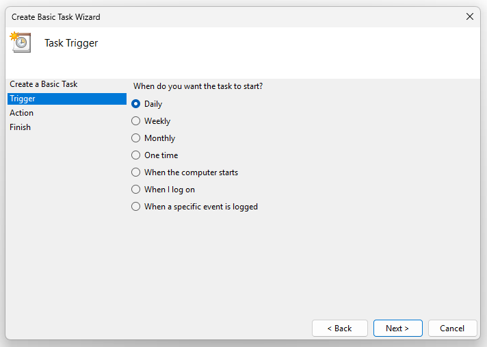
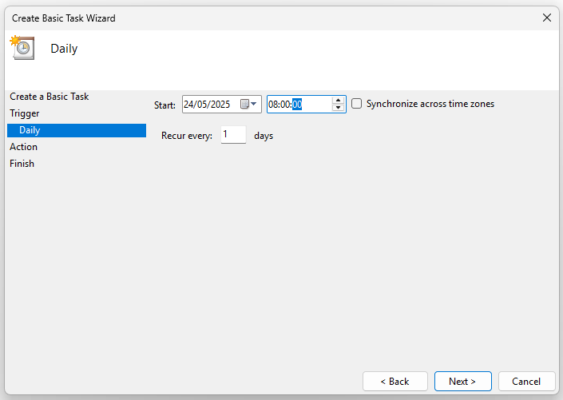
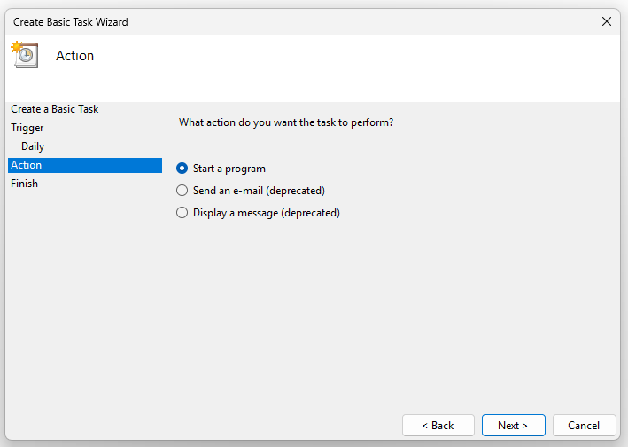
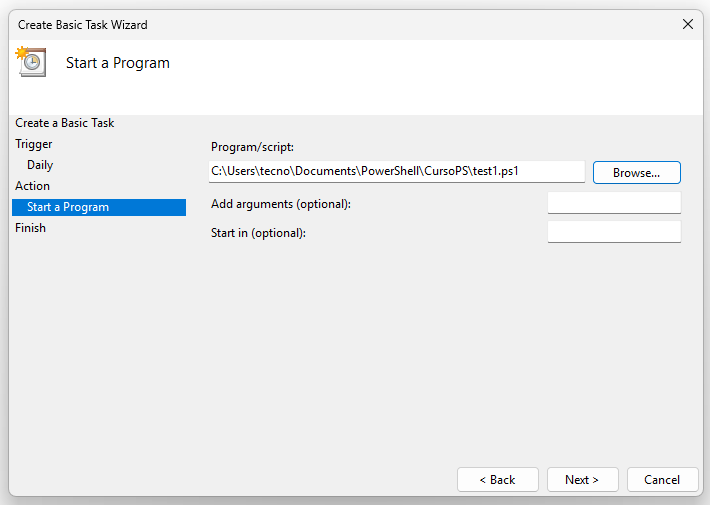
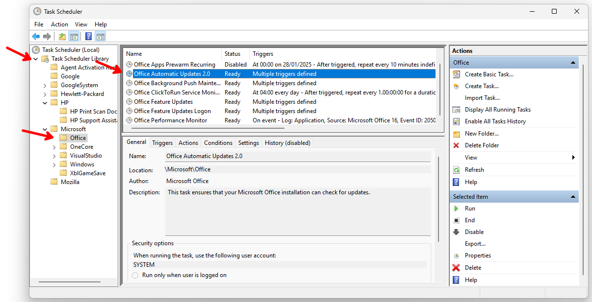

🧭 Sessão 3: Tarefas Agendadas e Cron Jobs
🎯 Objetivo
Aprender a criar tarefas agendadas no Windows com PowerShell e tarefas recorrentes em Linux com cron. Vais compreender os conceitos, comandos essenciais, e ver exemplos práticos para automatizar scripts em horários definidos.
- 1. Introdução ao agendamento de tarefas
- 2. Criar tarefas agendadas no Windows com PowerShell
- 3. Criar tarefas recorrentes no Windows com o Task Scheduler
- 4. Criar tarefas recorrentes em Linux com cron
- 5. Comparação rápida
- 6. Exercícios
- 7. Boas práticas
1. Introdução ao agendamento de tarefas
Agendar tarefas permite automatizar ações como correr scripts, enviar emails, ou gerar relatórios, sem intervenção manual.
No Windows, usamos o Agendador de Tarefas (Task Scheduler).
No Linux, usamos o comando cron.
Para abrir a interface gráfica do Task Scheduler no Windows:
- Abre o menu Iniciar e escreve
taskschd.mscouAgendador de Tarefas -
Também podes usar
Win + Re escrever:taskschd.msc
2. Criar tarefas agendadas no Windows com PowerShell
2.1. Comandos principais
New-ScheduledTaskActioncria a ação (o que será executado)New-ScheduledTaskTriggerdefine quando será executadaRegister-ScheduledTaskregista a tarefa no sistema
2.2. Exemplo: correr um script todos os dias às 8h
$acao = New-ScheduledTaskAction -Execute "powershell.exe" -Argument "-File C:\Scripts\meuscript.ps1"
$gatilho = New-ScheduledTaskTrigger -Daily -At 8am
Register-ScheduledTask -TaskName "ScriptDiario" -Action $acao -Trigger $gatilho -Description "Executa script diariamente às 8h"
⚠️ Necessário correr como administrador.
3. Criar tarefas recorrentes no Windows com o Task Scheduler
Ao iniciar o Task Scheduler temos várias possibilidades. Vamos começar por criar uma nova tarefa.

Preencher o nome e descrição da tarefa

Escolher a cadência em que queremos correr a tarefa

Escolher dentro da cadência qual o período. Neste caso, sendo a cadência diária é necessário escolher qual a hora do dia e se ocorre diariamente ou de quantos em quantos dias.

Escolher qual a ação

Neste caso vamos correr um script, pelo que temos de indicar o caminho do script e os parâmetros (se necessário)

E antes de gravar a tarefa, podemos verificar se está tudo correto.

Outra possibilidade que temos é verificar as tarefas que já estão gravadas.

🔗 How to create an automated task using Task Scheduler on Windows 10
4. Criar tarefas recorrentes em Linux com cron
4.1. O que é o cron
O cron é o serviço que executa comandos de forma automática segundo uma agenda definida.
4.2. Editar o cron do utilizador
crontab -e
Cada linha define uma tarefa:
* * * * * comando_a_executar
Ordem dos campos:
minuto hora dia_do_mês mês dia_da_semana comando
4.3. Exemplo: correr script todos os dias às 8h
0 8 * * * /home/utilizador/scripts/meuscript.sh
Usa caminhos absolutos e assegura permissões de execução (
chmod +x).
5. Comparação rápida
| Funcionalidade | Windows (PowerShell + Task Scheduler) | Linux (cron) |
|---|---|---|
| Criação de tarefa | Register-ScheduledTask | crontab -e |
| Expressividade | Triggers avançados (UI ou script) | Expressão cron (5 campos) |
| Visualização de tarefas | Interface gráfica ou Get-ScheduledTask | crontab -l |
| Ficheiro de registo | Event Viewer | Syslog ou logs personalizados |
| Permissões | Pode pedir UAC/Admin | Por utilizador |
| Formato de scripts | .ps1, .bat, .exe | .sh, qualquer comando shell |
6. Exercícios
6.1. PowerShell
Cria uma tarefa que execute um script PowerShell todos os dias às 14h. O script deve escrever a data e hora num ficheiro de log localizado em C:\Logs\hora.txt.
-
Cria o script:
Set-Content -Path C:\Scripts\loghora.ps1 -Value 'Get-Date | Out-File -Append -FilePath C:\Logs\hora.txt' -
Cria a tarefa agendada:
$acao = New-ScheduledTaskAction -Execute "powershell.exe" -Argument "-File C:\Scripts\loghora.ps1" $gatilho = New-ScheduledTaskTrigger -Daily -At 14:00 Register-ScheduledTask -TaskName "RegistarHora" -Action $acao -Trigger $gatilho
Verifica se as pastas
C:\ScriptseC:\Logsexistem. Cria-as se necessário.
6.2. cron
Agendar um script que escreve a hora atual num ficheiro todas as horas:
-
Criar script:
echo 'date >> /home/utilizador/hora.txt' > /home/utilizador/hora.sh chmod +x /home/utilizador/hora.sh -
Adicionar ao
crontab -e:0 * * * * /home/utilizador/hora.sh
7. Boas práticas
- Usa caminhos absolutos
- Testa o script manualmente antes de agendar
- Garante permissões de execução (
chmod +xno Linux) - Evita espaços no caminho do ficheiro no Windows, ou usa aspas
- Adiciona logs às tuas tarefas para depuração
🔗 Documentação PowerShell ScheduledTask
🔗 Manual crontab Linux